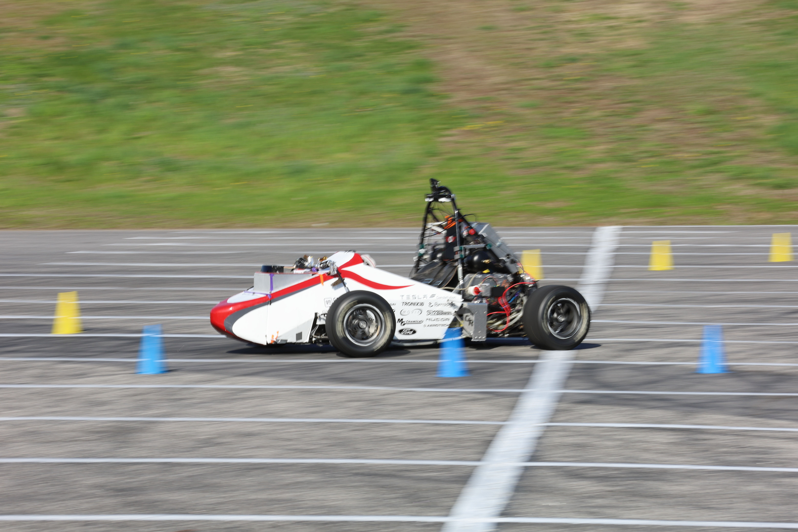
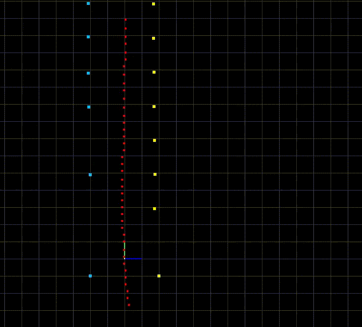
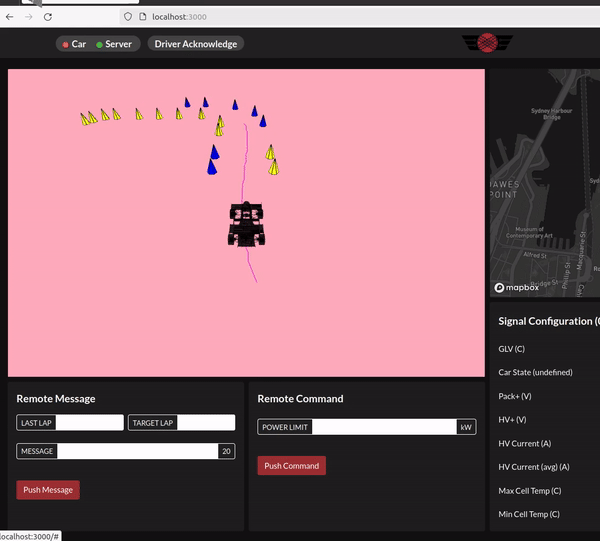
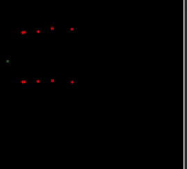

Project Lead for Carnegie Mellon Racing
22a - Autonomous Racecar w/ Top Speed of 40MPH

If you haven't checked out the predecessor to this vehicle, 19a, check it out here!
What is Carnegie Mellon Racing- Driverless?
Carnegie Mellon Racing - Driverless is CMU's premier autonomous formula-student racing team that converts championship, electric racecars into fully driverless vehicles. I helped found the project in my freshman year and was elected VP of Driverless during the 2023-2024 school year.
What was my role as VP of Driverless?
Our previous gen car 19a, while impressive, was extremely unreliable and had a very rudimentary software stack running on it. As a result, when I took over the team, I had an ambitious vision of overhaulting the entire technical platform as well as how the team was managed. My main goals and responsibilities were:
- Overhauling all software, mechanical, and electrical aspects of the vehicle to develop a more robust, higher performance vehicle
- Growing the team from a just 6 members to over 30 talented engineers
- Gaining over $30,000 in in-kind sponsorships for GPUs and state-of-the-art sensors (LiDAR + GPS)
- Working with Formula Student + corporate sponsors to establish a Driverless competition here in North America
In the end, I led development of what is now considered one of the most technically advanced Formula Student Driverless racecars in North America.
Technical Achievements of 22a

Cone Detection on Stereo Images via YOLOv8
We trained a YOLOv8 model to detect the blue, yellow, and orange cones that form track boundaries. We used an open-source Formula Student cones dataset and used a variety of augmentation techniques, including gaussian blur, random rotation, and hue/saturation augmentations. The runtime of the model was improved to just 20ms by using quantization techniques to reduce the precision of our parameters from 32-bit floats to 8-bit integers. Our experiments show that the model achieves a mAP of 0.92.

Solid-State LiDAR Filtering, Clustering, Coloring
One of the big improvements on 22a is the use of a Hesai AT128 lidar for accurate depth estimation of cones. We utilize a plane-fitting algorithm to remove ground points then run DBSCAN on the pointcloud to pick out clusters that are likely to represent cones. This is passed into a coloring algorithm based on Iterative-Closest-Point as well as a regression model based on the average reflectance of the cluster to classify each cluster as a blue, yellow, or orange cone.

Novel Support Vector Machine Path Planner
We recast the path planning problem as a classification problem where the goal is to find the decision boundary between the set of blue cones on the left side of the track and the yellow cones on the right side of the track. We decided to use a nonlinear SVM as the decision boundaries are likely to solve the midline problem due to the construction of the support vectors that guaruntee the decision boundary is as far away from both classes as it can be (in our case, the track midline).

Monte-Carlo MPC Controller
As one of the most advanced controllers deployed on a Formula Student vehicle, this Monte-Carlo MPC controller samples 128,000 possible control actions and simulates them on a vehicle dynamics model. A cost function based on distance to track bounds and kinematic constraints is used to weight each trajectory, and the final control action is output as a weighted average. The trajectory rollouts are all parallelized on the GPU through CUDA programming.

DAQ-Live: Webpage for Live Vehicle Monitoring
In order to aid our debugging efforts, we developed a webpage called DAQ-Live to give us a livestream of all perceptions + path planning outputs. The webpage can also give live feeds of all sensor data onboard the vehicle (including camera, lidar, and gps data). The webpage was designed using Node.js and ROS Web Bridge.

iSAM2: State-of-the-Art SLAM
Working with Professor Michael Kaess, we were able to implement the Iterative Smoothing and Mapping (iSAM2) SLAM algorithm in order to map out the track. This implementation uses a factor-graph approach to generate tokens for cone landmarks and vehicle positions and continuously uses solves a nonlinear optimization problem to refine the vehicle + landmark poses in order to prevent drift. The maps generated by this algorithm will be used to inform more complex path planning algorithms in future years in order to improve from midline paths to minimum-time paths.

Redesigned Autonomous Low Voltage System
We had to redesign the low voltage system of our existing electric vehicle in order to add in critical safety features and new power distribution to the sensors we were adding. Specifically, we designed a brand new PCB called the Autonomous Interface Module (AIM) that triggered the pneumatic emergency brakes in case of a remote e-stop press, distributed power to all of our sensors, and communicated with the main CPU onboard the vehicle to parse its throttle and steering wheel requests and apply them to the vehicle. The board's firmware was written in C and all debugging of CAN messages happened through PCAN.

Responsive Autonomous Steering System
In order to hit our top speed target of 40mph, we designed a autonomous steering system that could actuate the front axle lock-to-lock in under 1 second. The design used a powerful motor + gearbox to turn the steering rack. A PID loop was used to ensure quick response from the motor while preventing overshooting of the target wheel angle setpoints. The system was robust enough to handle close to a 100 miles of on-track testing.